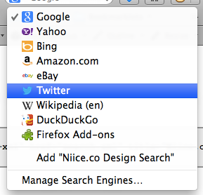

By adding the following <link /> tag to your head:
<link rel="search" type="application/opensearchdescription+xml" href="search.xml" title="Niice.co Design Search" />
That points to the following xml file:
<?xml version="1.0" encoding="UTF-8"?>
<OpenSearchDescription xmlns="http://a9.com/-/spec/opensearch/1.1/">
<ShortName>Niice.co Design Search</ShortName>
<Description>Search for inspiration on Niice.co</Description>
<Tags>design inspiration dribbble behance designspiration</Tags>
<Image height="16" width="16" type="image/vnd.microsoft.icon">http://niice.co/favicon.ico</Image>
<Url type="text/html" template="http://www.niice.co/?search={searchTerms}"/>
<Query role="example" searchTerms="cat"/>
</OpenSearchDescription>
You can register search options for your site in browsers. For instance, in Firefox, I will have the option to add "Niice.co Design Search" to my list of managed search engines:
